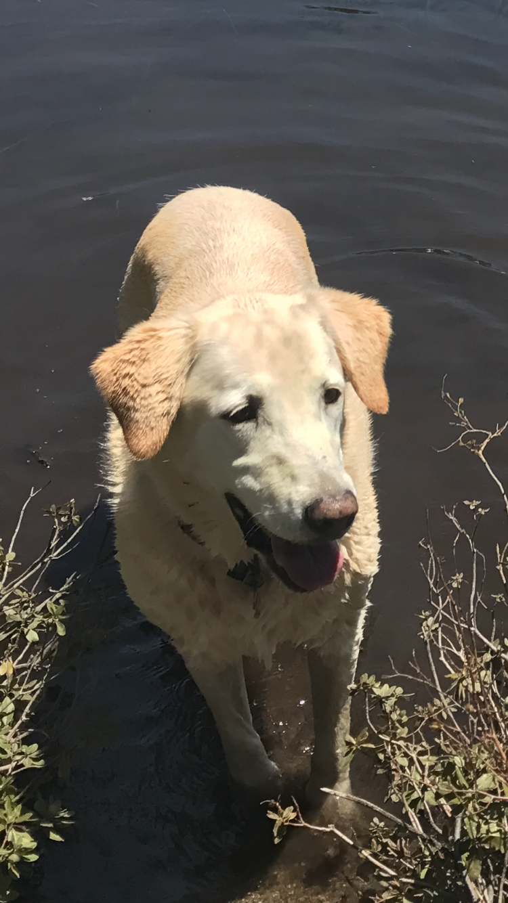

Hi my name is Kacie Sorfleet. I am very adventurous and I love to travel. My hobbies include playing sports and walking my dog, Char, who is a yellow labrador mix.
I live along the california coast in a small town called Moss Beach, located about 8 miles North of Half Moon Bay and 20 miles south of San Fransisco. I am currently attending Half Moon Bay High School. I am on the HS waterpolo, basketball, and surf team. I also competetively play soccer.
Below are links to some of my recent projects as I make my way through the Girls Who Code program.
Find me interesting? Follow my instagram (@kaciesorfleet)